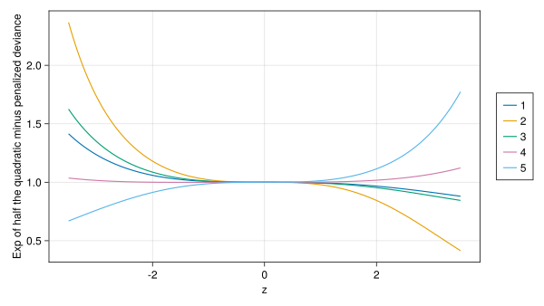

The log-likelihood for a linear mixed model (LMM) was derived in Section B.7, where some computational methods for fitting such models with MixedModels.jl, by optimizing a profiled log-likelihood, were illustrated.
In this appendix we outline the evaluation of the log-likelihood for a generalized linear mixed model (GLMM) with a binary response, which is modelled using the Bernoulli distribution.
C.1 The Bernoulli GLMM
The Bernoulli GLMM model defines the conditional distribution \(({{\mathcal{Y}}}|{{\mathcal{B}}}={{\mathbf{b}}})\) as independent Bernoulli random variables with expected values \({{\boldsymbol{\mu}}}={{\mathbf{g}}}^{-1}({{\boldsymbol{\eta}}})\), where \({{\boldsymbol{\eta}}}={{\mathbf{X}}}{{\boldsymbol{\beta}}}+{{\mathbf{Z}}}{{\mathbf{b}}}\) is the linear predictor and \({\mathbf{g}}^{-1}\) is an inverse link function.
We will use the logit link function, \({\boldsymbol{\eta}}={\mathbf{g}}({\boldsymbol{\mu}})\), defined component-wise from the scalar logit link, \(g\), as \[
\eta_i=g(\mu_i)=\mathrm{logit}(\mu_i)=\log\left(\frac{\mu_i}{1-\mu_i}\right)\quad i=1,\dots,n .
\] The inverse link, \({\boldsymbol{\mu}}={\mathbf{g}}^{-1}({\boldsymbol{\eta}})\), is similarly defined component-wise from the inverse of the scalar logit, which is the scalar logistic function, \[
\mu_i=g^{-1}(\eta_i)=\mathrm{logistic}(\eta_i)=\frac{1}{1+e^{-\eta_i}}\quad i=1,\dots,n .
\tag{C.1}\] The logit is the canonical link function (Section 6.2.2) for the Bernoulli distribution.
As in the linear mixed model discussed in Section B.7, the \(q\)-dimensional random effects, \({\mathcal{B}}\), are expressed as \({\mathcal{B}}={\boldsymbol{\Lambda}}_{{\boldsymbol{\theta}}}\,{\mathcal{U}}\) where \({\mathcal{U}}\) has a standard, multivariate Gaussian distribution (Section B.2) \[
{\mathcal{U}}\sim{\mathcal{N}}({\mathbf{0}},{\mathbf{I}}_q) ,
\tag{C.2}\] with probability density function \[
f_{{\mathcal{U}}}({\mathbf{u}})=\frac{1}{\sqrt{2\pi}^q}e^{-\|{\mathbf{u}}\|^2/2} .
\tag{C.3}\]
For a linear mixed model the distribution of these spherical random effects was given as \({\mathcal{U}}\sim({\mathbf{0}},\sigma^2{\mathbf{I}}_q)\) (Equation B.35). A dispersion parameter like \(\sigma^2\) is not present in Equation C.2 because the Bernoulli distribution does not have a separate dispersion parameter — it is entirely determined by its mean.
As is the case for the linear mixed model, the covariance factor, \({\boldsymbol{\Lambda}}_{{\boldsymbol{\theta}}}\), is sparse and patterned. It is not uncommon in practical examples, such as the one in Section C.4, for \({\boldsymbol{\theta}}\) to be one-dimensional and \({\boldsymbol{\Lambda}}_{{\boldsymbol{\theta}}}=\theta\,{\mathbf{I}}_q\), to be a scalar multiple of the \(q\times q\) identity matrix.
C.1.1 Log-likelihood for a Bernoulli GLMM
The likelihood for the parameters, \({\boldsymbol{\theta}}\) and \({\boldsymbol{\beta}}\), given the observed data, \({\mathbf{y}}\), is the value of the marginal probability mass function for the response, \({\mathcal{Y}}\), evaluated at \({\mathbf{y}}\), the observed vector of {0,1} responses. We obtain this value by integrating the product of the probability mass function for the conditional distribution, \(({\mathcal{Y}}|{\mathcal{U}}={\mathbf{u}})\), and unconditional density of \({\mathcal{U}}\) (Equation C.3), with respect to \({\mathbf{u}}\).
Recall that the probability mass for a single Bernoulli response can be written as \((1-\mu)^{1-y}\mu^y\), which is the specialization to \(n=1\) of the probability mass function for the binomial distribution\[
\binom{n}{y}(1-\mu)^{n-y}\mu^y ,\quad 0\le\mu\le 1, \quad y\in\{0,\dots,n\} .
\] Because the components of the vector-valued conditional distribution, \(({\mathcal{Y}}|{\mathcal{U}}={\mathbf{u}})\), are assumed to be independent, its probability mass function can be written as the product of the probability masses for each component \[
f_{{\mathcal{Y}}|{\mathcal{U}}={\mathbf{u}}}({\mathbf{y}}|{\mathbf{u}})=\prod_{i=1}^n \left[(1-\mu_i)^{1-y_i}\mu_i^{y_i}\right]
\quad\mathrm{where}\quad
{\boldsymbol{\mu}}={\mathbf{g}}^{-1}({\mathbf{X}}{\boldsymbol{\beta}}+{\mathbf{Z}}{\boldsymbol{\Lambda}}_{{\boldsymbol{\theta}}}{\mathbf{u}}) ,
\] providing the likelihood as \[
\begin{aligned}
L({\boldsymbol{\eta}},{\boldsymbol{\theta}}|{\mathbf{y}})&=
\int_{{\mathbf{u}}}f_{{\mathcal{Y}},{\mathcal{U}}={\mathbf{u}}}({\mathbf{y}},{\mathbf{u}})f_{{\mathcal{U}}}({\mathbf{u}})\,d{\mathbf{u}}\\
&=\int_{{\mathbf{u}}}\frac{1}{\sqrt{2\pi}^q}e^{\sum_{i=1}^n(1-y_i)\log(1-\mu_i)+y_i\,\log(\mu_i)}
e^{-\left\|{\mathbf{u}}\right\|^2/2}\,d{\mathbf{u}}\\
&=\int_{{\mathbf{u}}}\frac{1}{\sqrt{2\pi}^q}\exp\left(\frac{\left\|{\mathbf{u}}\right\|^2+\sum_{i=1}^n d(y_i,\mu_i)}{-2}\right)\,d{\mathbf{u}}
\end{aligned}
\tag{C.4}\] where the unit deviances, \(d(y_i,\mu_i)\), are \[
d(y_i,\mu_i)=-2\left[(1-y_i)\log(1-\mu_i)+y_i\log(\mu_i)\right]\quad i=1,\dots,n .
\tag{C.5}\]
By converting from the logarithm of the probability mass function to the deviance scale, which is negative twice the log-probability, we get a quantity, \(\sum_{i=1}^n d(y_i,\mu_i)\), which is on the same scale as the squared length, \(\|{\mathbf{u}}\|^2\), of a standard multivariate Gaussian. The sum of the unit deviances is analogous to the sum of squared residuals, \(\|{\mathbf{y}}-{\mathbf{X}}{\boldsymbol{\beta}}\|^2\), in a linear model.
In Section B.7 we showed that the integral defining the likelihood for a linear mixed model, Equation B.43, has an analytic solution. In general, the integral in Equation C.4 does not. We will approximate the value of this integral using a quadratic approximation to the argument of the exponential function in Equation C.4 at the value of \({\mathbf{u}}\) that maximizes the integrand, which is the density of the conditional distribution, \(({\mathcal{U}}|{\mathcal{Y}}={\mathbf{y}})\), up to a scale factor. Because the scale factor does not affect the location of the maximum, the value of \({\mathbf{u}}\) that maximizes the integrand, \[
\begin{aligned}
\tilde{{\mathbf{u}}}({\mathbf{y}}|{\boldsymbol{\theta}},{\boldsymbol{\beta}})
&=\arg\max_{{\mathbf{u}}}\exp\left(\frac{\left\|{\mathbf{u}}\right\|^2 + \sum_{i=1}^n d(y_i,\mu_i)}{-2}\right)\\
&=\arg\min_{{\mathbf{u}}}\left(\left\|{\mathbf{u}}\right\|^2 + \sum_{i=1}^n d(y_i,\mu_i)\right)
\end{aligned} ,
\tag{C.6}\] is also the conditional mode — the value of \({\mathbf{u}}\) that maximizes the conditional density. The expression being minimized in Equation C.6, \(\left\|{\mathbf{u}}\right\|^2 + \sum_{i=1}^n d(y_i,\mu_i)\), is called the penalized deviance.
Using a quadratic approximation to the penalized deviance at this conditional mode (i.e. the mode of the conditional distribution of \({\mathcal{U}}\) given \({\mathcal{Y}}={\mathbf{y}}\)) is equivalent to using a multivariate Gaussian approximation to this conditional distribution. Approximating an integral like Equation C.4 by approximating the integrand as a scaled multivariate Gaussian distribution at its mode is called Laplace’s approximation (Tierney & Kadane (1986)).
The penalized iteratively re-weighted least squares (PIRLS) algorithm (Section C.4) provides a fast and stable method of determining the conditional mode, \(\tilde{{\mathbf{u}}}({\mathbf{y}}|{\boldsymbol{\theta}},{\boldsymbol{\beta}})\) (Equation C.6), thereby making it feasible to use Laplace’s approximation at scale.
Before discussing PIRLS, however, we will describe generalized linear models (GLMs) without random effects (Section C.2), for which the deviance is defined as the sum of the unit deviances and the maximum likelihood estimate of the coefficient vector, \(\widehat{{\boldsymbol{\beta}}}\), is the value that minimizes the deviance. In Section C.3 we describe the iteratively re-weighted least squares (IRLS) algorithm, which is a stable, fast algorithm to minimize the deviance.
We will illustrate the IRLS algorithm with the contra data discussed in Chapter 6 and a model like com05, which was fit in that chapter, but without the random effects. Later we will use the full com05 model to illustrate some of the computations for GLMMs.
Although 0/1 responses and the Bernoulli distribution are easy to describe, the theory of the generalized linear mixed model (GLMM) and the details of the implementation are not. Readers who wish to focus on practical applications more than on the theory should feel free to skim this appendix.
To introduce some terms and workflows we first consider the generalized linear model (GLM) for the Bernoulli distribution and the logit link. The linear predictor for a GLM - a model without random effects - is simply \[
{{\boldsymbol{\eta}}}= {{\mathbf{X}}}{{\boldsymbol{\beta}}} ,
\] and the mean response vector, \({{\boldsymbol{\mu}}}={\mathbf{g}}^{-1}({\boldsymbol{\eta}})\), is obtained by component-wise application of the scalar logistic function (Equation C.1).
The probability mass function for the Bernoulli distribution is \[
f_{{\mathcal{Y}}}(y|\mu) = \mu^y\,(1-\mu)^{(1-y)}\quad\mathrm{for}\quad y\in\{0,1\} .
\]
Because the elements of \({{\mathcal{Y}}}|{{\boldsymbol{\mu}}}\) are assumed to be independent, the log-likelihood is simply the sum of contributions from each element, which, on the deviance scale, can be written in terms of the unit deviances\[
\begin{aligned}
-2\,\ell({{\boldsymbol{\mu}}}|{\mathbf{y}})&= -2\,\log(L({{\boldsymbol{\mu}}}|{\mathbf{y}}))\\
&=-2\,\sum_{i=1}^n y_i\log(\mu_i)+(1-y_i)\log(1-\mu_i) .
\end{aligned}
\tag{C.7}\]
As described above, it is customary when working with GLMs to convert the log-likelihood to a deviance, which, for the Bernoulli distribution, is negative twice the log-likelihood. (For other distributions, the deviance may incorporate an additional term that depends only on \({\mathbf{y}}\).)
One reason for preferring the deviance scale is that the change in deviance for nested models has approximately a \(\chi^2\) distribution with degrees of freedom determined by the number of independent constraints on the parameters in the simpler model. Especially for GLMs, the deviance plays a role similar to the sum of squared residuals in linear models.
For greater numerical precision we avoid calculating \(1-\mu\) directly when evaluating expressions like Equation C.7 and instead use \[
1 - \mu = 1 - \frac{1}{1+e^{-\eta}}=\frac{e^{-\eta}}{1+e^{-\eta}} .
\] Evaluation of the last expression provides greater precision for large negative values of \(\eta\) (corresponding to small values of \(\mu\)) than does first evaluating \(\mu\) followed by \(1 - \mu\).
After some algebra, we write the unit deviance, \(d(y_i,\eta_i)\), which is the contribution to the deviance from the \(i\)th observation, as \[
\begin{aligned}
d(y_i, \eta_i)&=-2\left[y_i\log(\mu_i)+(1-y_i)\log(1-\mu_i)\right]\\
&=2\left[(1-y_i)\eta_i-\log(1+e^{-\eta_i})\right]
\end{aligned}
\quad i=1,\dots,n
\]
A Julia function to evaluate both the mean and the unit deviance can be written as
functionmeanunitdev(y::T, η::T) where {T<:AbstractFloat} expmη =exp(-η)return (; μ=inv(1+ expmη), dev=2* ((1- y) * η +log1p(expmη)))end
log1p
Mathematically log1p, read log of 1 plus, is defined as \(\mathrm{log1p}(x)=\log(1+x)\) but it is implemented in such a way as to provide greater accuracy when \(x\) is small. For example,
let small =eps() /10@show small@show1+ small@showlog(1+ small)@showlog1p(small)end;
small = 2.2204460492503132e-17
1 + small = 1.0
log(1 + small) = 0.0
log1p(small) = 2.2204460492503132e-17
1 + small evaluates to 1.0 in floating point arithmetic because of round-off, producing 0 for the expression log(1 + small), whereas log1p(small) ≈ small, as it should be.
This function returns a NamedTuple of values from scalar arguments. For example,
meanunitdev(0.0, 0.21)
(μ = 0.5523079095743253, dev = 1.6072991620435673)
A Vector of such NamedTuples is a row-table (Section A.2), which can be updated in place by dot-vectorization of the scalar meanunitdev function, as shown below.
C.2.1 An example: fixed-effects only from com05
We illustrate some of these computations using only the fixed-effects specification for com05, a GLMM fit to the contra data set in Chapter 6. Because we will use the full GLMM later we reproduce com05 by loading the data, creating the binary ch variable indicating children/no-children, defining the contrasts and formula to be used, and fitting the model as in Chapter 6.
Code
contra =let tbl =dataset(:contra)Table(tbl; ch=tbl.livch .≠"0")endcontrasts[:urban] =HelmertCoding()contrasts[:ch] =HelmertCoding()com05 =let f =@formula use ~1+ urban + ch * age + age & age + (1| dist & urban)fit(MixedModel, f, contra, Bernoulli(); contrasts, nAGQ=9, progress)end
Extract the fixed-effects model matrix, \({\mathbf{X}}\), and initialize the coefficient vector, \({\boldsymbol{\beta}}\), to a copy (in case we modify it) of the estimated fixed-effects.
As stated above, the meanunitdev function can be applied to the vectors, \({\mathbf{y}}\) and \({{\boldsymbol{\eta}}}\), via dot-vectorization to produce a Vector{NamedTuple}, which is the typical form of a row-table.
The deviance for this value of \({{\boldsymbol{\beta}}}\) in this model is the sum of the unit deviances, which we write as sum applied to a generator expression. (In general we extract columns of a row-table with generator expressions that produce iterators.)
sum(r.dev for r in rowtbl)
2411.193011221526
C.2.2 Encapsulating the model in a struct
When minimizing the deviance it is convenient to have the different components of the model encapsulated in a user-created struct type so we can update the parameter values and evaluate the deviance without needing to keep track of all the pieces of the model.
We also create an external constructor, which is a function defined outside the struct and of the same name as the struct, that constructs and returns an object of that type. In this case the external constructor creates a BernoulliGLM from the model matrix and the response vector, after some consistency checks on the arguments passed to it.
functionBernoulliGLM( X::Matrix{T}, y::Vector{T},) where {T<:AbstractFloat}# check consistency of arguments n =size(X, 1) # number of rows in Xiflength(y) ≠ n ||any(!in([0, 1]), y)throw(ArgumentError("y is not an $n-vector of 0's and 1's"))end# initial β from linear regression of y in {-1,1} coding β = X \replace(y, 0=>-1) η = X * βreturnBernoulliGLM(X, β, (; y, η), meanunitdev.(y, η))end
To optimize the deviance we define an extractor method that returns the deviance
StatsAPI.deviance(m::BernoulliGLM) =sum(r.dev for r in m.rtbl)
Why StatsAPI.deviance and not just deviance?
This extractor is written as a method for the generic deviance function defined in the StatsAPI package. Doing so allows us to use the deviance name for the extractor without interfering with deviance methods defined for other model types.
We also define a mutating function, setβ!, that installs a new value of β then updates η and rtbl in place.
functionsetβ!(m::BernoulliGLM, newβ) (; y, η) = m.ytbl # destructure ytblmul!(η, m.X, copyto!(m.β, newβ)) # η = X * newβ in place m.rtbl .=meanunitdev.(y, η) # update rtbl in placereturn mend
Create such a struct from X and y for model com05.
com05fe =BernoulliGLM(com05.X, com05.y)β₀ =copy(com05fe.β) # keep a copy of the initial values
These initial values of \({\boldsymbol{\beta}}\) are from a least squares fit of \({\mathbf{y}}\), converted from {0,1} coding to {-1,1} coding, on the model matrix, \({\mathbf{X}}\).
As a simple test of the setβ! and deviance methods we can check that com05fe produces the same deviance value for βm05 as was evaluated above.
deviance(setβ!(com05fe, βm05))
2411.193011221526
For fairness in later comparisons we restore the initial values β₀ to the model. These are rough starting estimates with a deviance that is considerably greater than that at βm05.
deviance(setβ!(com05fe, β₀))
2491.1514390537254
C.2.3 Fit the GLM using a general optimizer
We can use a general optimizer like those available in NLopt.jl to minimize the deviance. Following the instructions given at that package’s repository, we create an Opt object specifying the algorithm to be used, BOBYQA (Powell (2009)), and the dimension of the problem, then define and assign the objective function in the required form, and call optimize
function StatsAPI.fit!(m::BernoulliGLM{T}) where {T} opt =Opt(:LN_BOBYQA, length(m.β))functionobjective(x::Vector{T}, g::Vector{T}) where {T}isempty(g) ||throw(ArgumentError("Gradient not available, g must be empty"), )returndeviance(setβ!(m, x))end opt.min_objective = objective minf, minx, ret =optimize(opt, copy(m.β))@info (; code=ret, nevals=opt.numevals, minf)return mend
The optimizer has determined a coefficient vector that reduces the deviance to 2409.38, at which point convergence was declared because changes in the objective are limited by round-off. This required about 500 evaluations of the deviance at candidate values of \({\boldsymbol{\beta}}\).
Each evaluation of the deviance is fast, requiring only a fraction of a millisecond on a laptop computer,
but the already large number of evaluations for these six coefficients would not scale well as this dimension increases.
Fortunately there is an algorithm, called iteratively reweighted least squares (IRLS), that uses the special structure of the GLM to provide fast and stable convergence to estimates of the coefficients, even for models with a large number of coefficients. This will be important to us in fitting GLMMs where we must optimize with respect to the random effects, whose dimension can be large.
C.3 The IRLS algorithm
As we have seen, in a GLM we are modeling the responses and the predicted values on two scales — the linear predictor scale, for \({\boldsymbol{\eta}}\), and the response scale, for \({\mathbf{y}}\) and \({\boldsymbol{\mu}}\). The scalar link function, \(\eta=g(\mu)\), and the inverse link, \(\mu=g^{-1}(\eta)\), map vectors component-wise between these two scales.
For operations like determining a new candidate value of \({\boldsymbol{\beta}}\), the linear predictor scale is preferred, because, on that scale, \({\boldsymbol{\eta}}={\mathbf{X}}{\boldsymbol{\beta}}\) is a linear function of \({\boldsymbol{\beta}}\). Thus it would be convenient if we could transform the response, \({\mathbf{y}}\), to the linear predictor scale where we could define a residual and use some form of minimizing a sum of squared residuals to evaluate a new coefficient vector (or, alternatively, evaluate an increment that will be added to the current coefficient vector). Unfortunately, a naive approach of transforming \({\mathbf{y}}\) to the linear predictor scale won’t work because the elements of \({\mathbf{y}}\) are all \(0\) or \(1\) and the logit link function maps these values to \(-\infty\) and \(\infty\), respectively.
For an iterative algorithm, however, we can use a local linear approximation to the link function to define a working residual, from which to evaluate an increment to the coefficient vector, or a working response, from which we evaluate the new coefficient vector directly. Because the link and inverse link functions are defined component-wise we will define the approximation for scalars \(y_i\), \(\mu_i\), and \(\eta_i\) and for the scalar link function, \(g\), with the understanding that these definitions apply component-wise to the vectors.
The working residual is evaluated by mapping the residual on the response scale, \(y_i-\mu_i\), through the linear approximation to the link, \(g(\mu)\), at \(\mu_i\). That is, \[
\tilde{r_i}=(y_i-\mu_i)g'(\mu_i)\quad i=1,\dots,n .
\] Because the derivative, \(g'(\mu_i)\), for the logit link function is \(1/[\mu_i(1-\mu_i)]\), these working residuals are \[
\tilde{r}_i = (y_i-\mu_i)g'(\mu_i) = \frac{y_i - \mu_i}{\mu_i(1-\mu_i)}\quad i=1,\dots,n .
\] Similarly, the working response on the linear predictor scale, is defined by adding the working residual to the current linear predictor value, \[
\tilde{y_i}=\eta_i + \tilde{r_i}=\eta_i +(y_i-\mu_i)g'(\mu_i)=
\eta_i + \frac{y_i - \mu_i}{\mu_i(1-\mu_i)}\quad i=1,\dots,n .
\]
On the linear predictor scale we can fit a linear model to the working response to obtain a new parameter vector, but we must take into account that the variances of the noise terms in this linear model, which are the working residuals, are not constant. We use weighted least squares where the weights are inversely proportional to the variance of the working residual. The variance of the random variable \({\mathcal{Y}}_i\) is \(\mu_i(1-\mu_i)\), hence the variance of the working residual is \[
\mathrm{Var}(\tilde{r_i})=g'(\mu_i)^2 \mathrm{Var}({\mathcal{Y}}_i)=\frac{\mu_i(1-\mu_i)}{\left[\mu_i(1-\mu_i)\right]^2}=\frac{1}{\mu_i(1-\mu_i)}
\quad i=1,\dots,n .
\]
Thus the working weights are \[
\begin{aligned}
w_i&=\mu_i(1-\mu_i)\\
&=\frac{1}{1+e^{-\eta_i}}\frac{e^{-\eta_i}}{1+e^{-\eta_i}}
\end{aligned}
,\quad i=1,\dots,n.
\]
In practice we will use the square roots of the working weights, evaluated as \[
\sqrt{w_i}=\frac{\sqrt{e^{-\eta_i}}}{1+e^{-\eta_i}}=\frac{e^{-\eta_i/2}}{1+e^{-\eta_i}}\quad i=1,\dots,n .
\]
Note that \(\mathrm{Var}({\mathcal{Y}}_i)\) happens to be the inverse of \(g'(\mu_i)\) for a Bernoulli response and the logit link function. This will always be true for distributions in the exponential family and their canonial links.
At the \(k\)th iteration the IRLS algorithm updates the coefficient vector to \({\boldsymbol{\beta}}^{(k)}\), which is a weighted least squares solution that could be written as \[
{\boldsymbol{\beta}}^{(k)}= \left({\mathbf{X}}'{\mathbf{W}}{\mathbf{X}}\right)^{-1}\left({\mathbf{X}}'{\mathbf{W}}\tilde{{\mathbf{y}}}\right) ,
\] where \({\mathbf{W}}\) is an \(n\times n\) diagonal matrix of the working weights and \(\tilde{{\mathbf{y}}}\) is the working response, both evaluated at \({\boldsymbol{\beta}}^{(k-1)}\), the coefficient vector from the previous iteration.
In practice we use the square roots of the working weights, which we write as a diagonal matrix, \({\mathbf{W}}^{1/2}\), and a QR decomposition (Section B.6) of a weighted model matrix, \({\mathbf{W}}^{1/2}{\mathbf{X}}\), to solve for the updated coefficient vector from the weighted working response, \({\mathbf{W}}^{1/2}\tilde{{\mathbf{y}}}\), with elements \[
\begin{aligned}
\sqrt{w_i}(\eta_i+\tilde{r}_i)&=\sqrt{\mu_i(1-\mu_i)}(\eta_i+\tilde{r}_i)\\
&=\sqrt{w_i}\eta_i +\frac{(y_i-\mu_i)\sqrt{\mu_i(1-\mu_i)}}{\mu_i(1-\mu_i)}\\
&=\sqrt{w_i}\eta_i +\frac{y_i-\mu_i}{\sqrt{w_i}}
\end{aligned},\quad i=1,\dots,n
\]
It is possible to write the IRLS algorithm using a weighted least squares fit of the working residuals on the model matrix to determine a parameter increment. However, in the PIRLS algorithm it is necessary to use the working response, not the working residual, so we define the IRLS algorithm in those terms too.
Furthermore, in the PIRLS algorithm we will need to allow for an offset when calculating the working response. In the presence of an offset, \({\mathbf{o}}\), a constant vector of length \(n\), the linear predictor is defined as \[
{\boldsymbol{\eta}}= {\mathbf{o}}+ {\mathbf{X}}{\boldsymbol{\beta}}.
\] The mean, \({\boldsymbol{\mu}}\), the working weights and the working residuals are defined as before but the working response becomes \[
\tilde{{\mathbf{y}}}=\tilde{{\mathbf{r}}} + {\boldsymbol{\eta}}- {\mathbf{o}}.
\]
For a linear model there is rarely a reason for using an offset. Instead we can simply subtract the constant vector, \({\mathbf{o}}\), from the response, \({\mathbf{y}}\), because the response and the linear predictor are on the same scale. However, this is not the case for a GLM where we must deal with the effects of the constant offset on the linear predictor scale, not on the response scale.
C.3.1 Implementation of IRLS for Bernoulli-Logit
We define a BernoulliIRLS struct with three additional elements in the rowtable: the square roots of the working weights, rtwwt, the weighted working residuals, wwres, and the weighted working response, wwresp. In the discussion above, rtwwt is the diagonal of \({\mathbf{W}}^{1/2}\), wwres is \({\mathbf{W}}^{1/2}\tilde{{\mathbf{r}}}\) and wwresp is \({\mathbf{W}}^{1/2}\tilde{{\mathbf{y}}}\).
We also add fields Xqr, in which the weighted model matrix, \({\mathbf{W}}^{1/2}{\mathbf{X}}\), is formed followed by its QR decomposition, and βcp, which holds a copy of the previous coefficient vector.
struct BernoulliIRLS{T<:AbstractFloat} X::Matrix{T} Xqr::Matrix{T} # copy of X used in the QR decomp β::Vector{T} βcp::Vector{T} # copy of previous β Whalf::Diagonal{T,Vector{T}} # rtwwt as a Diagonal matrix ytbl::NamedTuple{(:y, :η),NTuple{2,Vector{T}}} rtbl::Vector{ NamedTuple{(:μ, :dev, :rtwwt, :wwres, :wwresp),NTuple{5,T}}, }end
with constructor
functionBernoulliIRLS( X::Matrix{T}, y::Vector{T},) where {T<:AbstractFloat} n =size(X, 1) # number of rows of Xiflength(y) ≠ n || !all(v -> (iszero(v) ||isone(v)), y)throw(ArgumentError("y is not an $n-vector of 0's and 1's"))end# initial β from linear least squares fit of y in {-1,1} coding Xqr =copy(X) β =qr!(Xqr) \replace(y, 0=>-1) βcp =copy(β) η = X * β rtbl =tblrow.(y, η) Whalf =Diagonal([r.rtwwt for r in rtbl])returnBernoulliIRLS(X, Xqr, β, βcp, Whalf, (; y, η), rtbl)end
The tblrow function evaluates the mean, unit deviance, square root of the weight, and the weighted, working residual and weighted, working response for scalar \(y\) and \(\eta\). The offset argument, which defaults to zero, is not used in calls for BernoulliIRLS models, but will be used in Section C.4 when we discuss the PIRLS algorithm.
functiontblrow( y::T, η::T, offset::T=zero(T),) where {T<:AbstractFloat} rtexpmη =exp(-η /2) # square root of exp(-η) expmη =abs2(rtexpmη) # exp(-η) denom =1+ expmη μ =inv(denom) dev =2* ((1- y) * η +log1p(expmη)) rtwwt = rtexpmη / denom # sqrt of working wt wwres = (y - μ) / rtwwt # weighted working resid wwresp = wwres + rtwwt * (η - offset)return (; μ, dev, rtwwt, wwres, wwresp)end
StatsAPI.deviance(m::BernoulliIRLS) =sum(r.dev for r in m.rtbl)
Next we define a mutating function, updateβ!, that evaluates \({\boldsymbol{\beta}}^{(k)}\), the updated coefficient vector at iteration \(k\), in place by weighted least squares then updates the response table.
functionupdateβ!(m::BernoulliIRLS) (; X, Xqr, β, βcp, Whalf, ytbl, rtbl) = m # destructure m & ytbl (; y, η) = ytblcopyto!(βcp, β) # keep a copy of βcopyto!(Whalf.diag, r.rtwwt for r in rtbl) # rtwwt -> Whalfmul!(Xqr, Whalf, X) # weighted model matrixcopyto!(η, r.wwresp for r in rtbl) # use η as temp storageldiv!(β, qr!(Xqr), η) # weighted least squares rtbl .=tblrow.(y, mul!(η, X, β)) # update η and rtblreturn mend
For our example, we start at the same coefficient vector as we did with the general optimizer.
We create a fit! method to iterate to convergence.
function StatsAPI.fit!(m::BernoulliIRLS, β₀=m.β; verbose::Bool=true) (; X, β, βcp, ytbl, rtbl) = m (; y, η) = ytbl rtbl .=tblrow.(y, mul!(η, X, copyto!(β, β₀))) olddev =deviance(m) verbose &&@info0, olddev # record the deviance at initial βfor i in1:100# perform at most 100 iterations newdev =deviance(updateβ!(m)) verbose &&@info i, newdev # iteration number and devianceif newdev > olddev@warn"failure to decrease deviance"copyto!(β, βcp) # roll back changes to β, η, and rtbl rtbl =tblrow.(y, mul!(η, X, β))breakelseif (olddev - newdev) < (1.0e-10* olddev)break# exit loop if deviance is stableelse olddev = newdevendendreturn mend
The IRLS algorithm has converged in 4 iterations to essentially the same deviance as the general optimizer achieved after around 500 function evaluations. Each iteration of the IRLS algorithm takes more time than a deviance evaluation, but still only a fraction of a millisecond on a laptop computer.
In Section B.7 we showed that, given a value of \({\boldsymbol{\theta}}\), which determines the relative covariance factor, \({\boldsymbol{\Lambda}}_{{\boldsymbol{\theta}}}\), of the random effects, \({\mathcal{B}}\), the conditional mode, \(\tilde{{\mathbf{b}}}\), of the random effects can be evaluated as the solution to a penalized least squares (PLS) problem. It is convenient to write the PLS problem in terms of the spherical random effects, \({\mathcal{U}}\sim{\mathcal{N}}({\mathbf{0}},\sigma^2{\mathbf{I}})\), with the defining relationship \({\mathcal{B}}={\boldsymbol{\Lambda}}_{{\boldsymbol{\theta}}}{\mathcal{U}}\), as in Equation B.38\[
\tilde{{\mathbf{u}}}=\arg\min_{{\mathbf{u}}}\left(
\left\|{\mathbf{y}}-{\mathbf{X}}{\boldsymbol{\beta}}-{\mathbf{Z}}{\boldsymbol{\Lambda}}_{{\boldsymbol{\theta}}}{\mathbf{u}}\right\|^2 +
\left\|{\mathbf{u}}\right\|^2
\right) .
\]
We wrote Equation B.38 for the LMM case as minimizing the penalized sum of squared residuals with respect to both \({\boldsymbol{\beta}}\) and \({\mathbf{u}}\). Here, and in Equation C.8 below, we minimize with respect to \({\mathbf{u}}\) only while holding \({\boldsymbol{\beta}}\) fixed.
The solution of this PLS problem, \(\tilde{\mathbf{u}}\), is the conditional mode of \({\mathcal{U}}\), in that it maximizes the density of the conditional distribution, \(({\mathcal{U}}|{\mathcal{Y}}={\mathbf{y}})\), at the observed \({\mathbf{y}}\). (In the case of a LMM, where the conditional distributions, \(({\mathcal{B}}|{\mathcal{Y}}={\mathbf{y}})\) and \(({\mathcal{U}}|{\mathcal{Y}}={\mathbf{y}})\), are multivariate Gaussian, the solution of the PLS problem is also the mean of the conditional distribution, but this property doesn’t carry over to GLMMs.)
In a Bernoulli generalized linear mixed model (GLMM) the mode of the conditional distribution, \(({\mathcal{U}}|{\mathcal{Y}}={\mathbf{y}})\), minimizes the penalized GLM deviance, \[
\tilde{{\mathbf{u}}}=\arg\min_{{\mathbf{u}}}\left(
\left\|{\mathbf{u}}\right\|^2+\sum_{i-1}^n d(y_i,\eta_i({\mathbf{u}}))
\right) ,
\tag{C.8}\] where \(d(y_i,\eta_i),\,i=1,\dots,n\) are the unit deviances defined in Section C.2. We modify the IRLS algorithm as penalized iteratively re-weighted least squares (PIRLS) to determine these values.
As with IRLS, each iteration of the PIRLS algorithm involves using the current linear predictor, \({\boldsymbol{\eta}}({\mathbf{u}})={\mathbf{X}}{\boldsymbol{\beta}}+{\mathbf{Z}}{\boldsymbol{\Lambda}}_{{\boldsymbol{\theta}}}{\mathbf{u}}\), (\({\boldsymbol{\beta}}\) and \({\boldsymbol{\theta}}\) are assumed known and fixed, and \({\mathbf{X}}{\boldsymbol{\beta}}\) is an offset) to evaluate the mean, \({\boldsymbol{\mu}}={\mathbf{g}}^{-1}({\boldsymbol{\eta}})\), of the conditional distribution, \(({\mathcal{Y}}|{\mathcal{U}}={\mathbf{u}})\), as well as the unit deviances, \(d(y_i,\eta_i)\), the square roots of the working weights, which are on the diagonal of \({\mathbf{W}}^{1/2}\), and the weighted, working response, \({\mathbf{W}}^{1/2}\tilde{{\mathbf{y}}}\). The updated spherical random effects vector, \({\mathbf{u}}\), is the solution to \[
({\boldsymbol{\Lambda}}'{\mathbf{Z}}'{\mathbf{W}}{\mathbf{Z}}{\boldsymbol{\Lambda}}+{\mathbf{I}}){\mathbf{u}}={\boldsymbol{\Lambda}}'{\mathbf{Z}}'{\mathbf{W}}\tilde{{\mathbf{y}}}
\] and is evaluated using the Cholesky factor, \({\mathbf{L}}\), of \({\boldsymbol{\Lambda}}'{\mathbf{Z}}'{\mathbf{W}}{\mathbf{Z}}{\boldsymbol{\Lambda}}+{\mathbf{I}}\).
As in the solution of the PLS problem in Section B.7, the fact that \({\mathbf{Z}}\) is sparse and that the sparsity is also present in \({\mathbf{L}}\), makes it feasible to solve for \({\mathbf{u}}\) even when its dimension is large.
C.4.1 PIRLS for com05
To illustrate the calculations we again use the com05 model, which has a single, scalar random-effects term, (1 | dist & urban), in its formula. The matrix \({\mathbf{Z}}\) is displayed as
com05re =only(com05.reterms)Int.(collect(com05re)) # Int values for compact printing
but internally it is stored much more compactly because it is an indicator matrix (also called one-hot encoding), which means that all \(Z_{i,j}\in\{0,1\}\) and in each row there is exactly one value that is one (and all the others are zero). The column in which the non-zero element of each row occurs is given as an integer vector in the refs property of com05re.
functionBernoulliPIRLS( X::Matrix{T}, y::Vector{T}, refs::Vector{S},) where {T<:AbstractFloat,S<:Integer}# use IRLS to check X and y, obtain initial β, and establish rtbl irls =fit!(BernoulliIRLS(X, y); verbose=false) β = irls.β θβ =append!(ones(T, 1), β) # initial θ = 1 η = X * β# refs should contain all values from 1 to maximum(refs) refvals =sort!(unique(refs)) q =length(refvals)if refvals ≠1:qthrow(ArgumentError("sort!(unique(refs)) must be 1:$q"))endlength(refs) ==length(y) ||throw(ArgumentError("lengths of y and refs aren't equal")) ytbl = (; refs, y, η, offset=copy(η)) utbl =NamedTuple( nm =>zeros(T, q) for nm in (:u, :u0, :Ldiag, :pdev, :pdev0, :aGHQ) )returnupdatetbl!(BernoulliPIRLS(X, θβ, ytbl, utbl, irls.rtbl))end
Why are θ and β stored in a single vector?
The reason for storing both \({\boldsymbol{\theta}}\) and \({\boldsymbol{\beta}}\) in a single vector is to provide for their simultaneous optimization with an optimizer such as those in NLopt.jl.
The utbl field in a BernoulliPIRLS struct contains vectors named u0, pdev, pdev0, and aGHQ, in addition to u and Ldiag. These are not used in the PIRLS algorithm (other than for keeping a copy of the previous \({\mathbf{u}}\)) or for optimizing Laplace’s approximation to the objective. However, they will be used in adaptive Gauss-Hermite quadrature evaluation of the objective (Section C.6), so we keep them in the struct throughout.
The updatetbl! method for this type first evaluates \({\boldsymbol{\eta}}\) via a “virtual” multiplication that forms \({\mathbf{Z}}{\boldsymbol{\Lambda}}_{{\boldsymbol{\theta}}}{\mathbf{u}}\) plus the stored offset, which is \({\mathbf{X}}{\boldsymbol{\beta}}\), then updates the rowtable from \({\mathbf{y}}\), \({\boldsymbol{\eta}}\), and the offset. For this model \({\boldsymbol{\theta}}\) is one-dimensional and \({\boldsymbol{\Lambda}}_{{\boldsymbol{\theta}}}\) is a scalar multiple of \({\mathbf{I}}_q\), the identity matrix of size \(q\), and thus the matrix multiplication by \({\boldsymbol{\Lambda}}_{{\boldsymbol{\theta}}}\) can be expressed as scalar products.
functionupdatetbl!(m::BernoulliPIRLS) (; refs, y, η, offset) = m.ytbl u = m.utbl.u θ =first(m.θβ)# evaluate η = offset + ZΛu where Λ is θ * I and Z is one-hotfill!(η, 0)@inboundsfor i ineachindex(η, refs, offset) η[i] += offset[i] + u[refs[i]] * θend m.rtbl .=tblrow.(y, η, offset)return mend
The pdeviance method returns the deviance for the GLM model plus the penalty on the squared length of u.
functionpdeviance(m::BernoulliPIRLS)returnsum(r.dev for r in m.rtbl) +sum(abs2, m.utbl.u)end
The updateu! method is similar to updateβ! for the BernoulliIRLS type except that it is based on the diagonal matrix \({\boldsymbol{\Lambda}}'{\mathbf{Z}}'{\mathbf{W}}{\mathbf{Z}}{\boldsymbol{\Lambda}}+ {\mathbf{I}}\). Only the diagonal elements of this matrix are constructed and used to solve for the updated \({\mathbf{u}}\) vector. At convergence of the PIRLS algorithm the elements of Ldiag are replaced by their square roots.
functionupdateu!(m::BernoulliPIRLS) (; u, u0, Ldiag) = m.utblcopyto!(u0, u) # keep a copy of u θ =first(m.θβ) # extract the scalar θfill!(u, 0)ifiszero(θ) # skip the update if θ == 0fill!(Ldiag, 1) # L is the identity if θ == 0returnupdatetbl!(m)endfill!(Ldiag, 0)@inboundsfor (ri, ti) inzip(m.ytbl.refs, m.rtbl) rtWΛ = θ * ti.rtwwt # non-zero in i'th row of √WZΛ Ldiag[ri] +=abs2(rtWΛ) # accumulate Λ'Z'WZΛ u[ri] += rtWΛ * ti.wwresp # accumulate Λ'Z'Wỹend Ldiag .+=1# form diagonal of Λ'Z'WZΛ + I = LL' u ./= Ldiag # solve for u with diagonal LL'returnupdatetbl!(m) # and update η and rtblend
Create a BernoulliPIRLS struct for the com05 model and check the penalized deviance at the initial values
m =BernoulliPIRLS(com05.X, com05.y, only(com05.reterms).refs)pdeviance(m)
2409.377428160041
As with IRLS, the first iteration of PIRLS reduces the objective, which is the penalized deviance in this case, substantially.
pdeviance(updateu!(m))
2233.1209476357844
Create a pirls! method for this struct.
functionpirls!(m::BernoulliPIRLS; verbose::Bool=false) (; u, u0, Ldiag) = m.utblfill!(u, 0) # start from u == 0copyto!(u0, u) # keep a copy of u oldpdev =pdeviance(updatetbl!(m)) verbose &&@info0, oldpdevfor i in1:10# maximum of 10 PIRLS iterations newpdev =pdeviance(updateu!(m)) verbose &&@info i, newpdevif newpdev > oldpdev # PIRLS iteration failed@warn"PIRLS iteration did not reduce penalized deviance"copyto!(u, u0) # restore previous uupdatetbl!(m) # restore η and rtblbreakelseif (oldpdev - newpdev) < (1.0e-8* oldpdev)copyto!(u0, u) # keep a copy of ubreakelsecopyto!(u0, u) # keep a copy of u oldpdev = newpdevendendmap!(sqrt, Ldiag, Ldiag) # replace diag(LL') by diag(L)return mend
The PIRLS iterations always start from \({\mathbf{u}}=\mathbf{0}\) so that the converged value of the penalized deviance is reproducible for given values of \(\theta\) and \({\boldsymbol{\beta}}\). If we allowed the algorithm to start at whatever values are currently stored in \({\mathbf{u}}\) then there could be slight differences in the value of the penalized deviance at convergence of PIRLS, which can cause problems when trying to optimize with respect to \(\theta\) and \({\boldsymbol{\beta}}\).
As with IRLS, PIRLS is a fast and stable algorithm for determining the mode of the conditional distribution \(({\mathcal{U}}|{\mathcal{Y}}={\mathbf{y}})\) with \({\boldsymbol{\theta}}\) and \({\boldsymbol{\beta}}\) held fixed.
The time taken for the four iterations to determine the conditional mode of \({\mathbf{u}}\) is comparable to the time taken for a single call to updateβ!. Most of the time in updateβ! is spent in the QR factorization to solve the weighted least squares problem, whereas in updateu!and thus in pirls!, we take advantage of the fact that the solution of the penalized, weighted least squares problem is based on a diagonal matrix.
C.5 Laplace’s approximation to the log-likelihood
The PIRLS algorithm determines the value of \({\mathbf{u}}\) that minimizes the penalized deviance \[
\tilde{{\mathbf{u}}}=\arg\min_{{\mathbf{u}}}\left(\left\|{\mathbf{u}}\right\|^2+\sum_{i=1}^n d(y_i,\eta_i)\right) ,
\] where \(\eta_i, i=1,\dots,n\) is the \(i\)th component of \({\boldsymbol{\eta}}={\mathbf{X}}{\boldsymbol{\beta}}+{\mathbf{Z}}{\boldsymbol{\Lambda}}{\mathbf{u}}\). A quadratic approximation to the penalized deviance at \(\tilde{{\mathbf{u}}}\) is \[
\begin{aligned}
\tilde{d}({\mathbf{y}},{\mathbf{u}})&=\|{\mathbf{u}}\|^2+\sum_{i=1}^n d(y_i,\eta_i)\\
&\approx\|\tilde{{\mathbf{u}}}\|^2+\sum_{i=1}^n d(y_i,\tilde{\eta}_i)+
({\mathbf{u}}-\tilde{{\mathbf{u}}})'({\boldsymbol{\Lambda}}'{\mathbf{Z}}'{\mathbf{W}}{\mathbf{Z}}{\boldsymbol{\Lambda}}+{\mathbf{I}})({\mathbf{u}}-\tilde{{\mathbf{u}}})\\
&=\|\tilde{{\mathbf{u}}}\|^2+\sum_{i=1}^n d(y_i,\tilde{\eta}_i)+
({\mathbf{u}}-\tilde{{\mathbf{u}}})'{\mathbf{L}}{\mathbf{L}}'({\mathbf{u}}-\tilde{{\mathbf{u}}})\\
&=\tilde{d}({\mathbf{y}},\tilde{{\mathbf{u}}})+
({\mathbf{u}}-\tilde{{\mathbf{u}}})'{\mathbf{L}}{\mathbf{L}}'({\mathbf{u}}-\tilde{{\mathbf{u}}})
\end{aligned}
\tag{C.9}\] where \({\mathbf{L}}\) is the lower Cholesky factor of \({\boldsymbol{\Lambda}}'{\mathbf{Z}}'{\mathbf{W}}{\mathbf{Z}}{\boldsymbol{\Lambda}}+{\mathbf{I}}\). (In Equation C.9 the linear term in \(({\mathbf{u}}-\tilde{{\mathbf{u}}})\) that would normally occur in such an expression is omitted because the gradient of \(\tilde{d}({\mathbf{y}},{\mathbf{u}})\) is zero at \(\tilde{{\mathbf{u}}}\).)
Laplace’s approximation to the log-likelihood uses this quadratic approximation to the penalized deviance, which is negative one-half the logarithm of the integrand, to approximate the value of the integral.
On the deviance scale, which is negative twice the log-likelihood, the approximation is \[
\begin{aligned}
-2\,\ell({\mathbf{u}}|{\mathbf{y}},{\boldsymbol{\theta}},{\boldsymbol{\beta}})&=-2\,\log\left(L({\mathbf{u}}|{\mathbf{y}},{\boldsymbol{\theta}},{\boldsymbol{\beta}})\right)\\
&=-2\,\log\left(\int_{{\mathbf{u}}}\frac{1}{\sqrt{2\pi}^q}\exp\left(\frac{\left\|{\mathbf{u}}\right\|^2+\sum_{i=1}^n d(y_i,\mu_i)}{-2}\right)\,d{\mathbf{u}}\right)\\
&\approx\tilde{d}({\mathbf{y}},\tilde{{\mathbf{u}}})-2\,\log\left(
\int_{\mathbf{u}}\frac{1}{\sqrt{2\pi}^q}\exp\left(\frac{[{\mathbf{u}}-\tilde{{\mathbf{u}}}]'{\mathbf{L}}{\mathbf{L}}'[{\mathbf{u}}-\tilde{{\mathbf{u}}}]}{-2}\right)\,d{\mathbf{u}}
\right)\\
&=\tilde{d}({\mathbf{y}},\tilde{{\mathbf{u}}})-2\,\log\left(
\int_{\mathbf{u}}\frac{1}{\sqrt{2\pi}^q}\exp\left(\frac{\left\|{\mathbf{L}}'[{\mathbf{u}}-\tilde{{\mathbf{u}}}\right\|^2}{-2}\right)\,d{\mathbf{u}}
\right)\\
&=\tilde{d}({\mathbf{y}},\tilde{{\mathbf{u}}})-2\,\log\left(|{\mathbf{L}}|^{-1}\right)\\
&=\tilde{d}({\mathbf{y}},\tilde{{\mathbf{u}}})+\log\left(|{\mathbf{L}}|^2\right)
\end{aligned}
\]
The remaining step is to optimize Laplace’s approximation to the GLMM deviance with respect to \(\theta\) and \({\boldsymbol{\beta}}\), which we do using the BOBYQA optimizer from NLopt.jl
function StatsAPI.fit!(m::BernoulliPIRLS) θβ = m.θβ pp1 =length(θβ) # length(β) = p and length(θ) = 1 opt =Opt(:LN_BOBYQA, pp1) mβ =view(θβ, 2:pp1)functionobj(x, g)if !isempty(g)throw(ArgumentError("gradient not provided, g must be empty"))endcopyto!(θβ, x)mul!(m.ytbl.offset, m.X, mβ)returnlaplaceapprox(pirls!(m))end opt.min_objective = obj lb =fill!(similar(θβ), -Inf) # vector of lower bounds lb[1] =0# scalar θ must be non-negative NLopt.lower_bounds!(opt, lb) minf, minx, ret =optimize(opt, copy(θβ))@info (; ret, fevals=opt.numevals, minf)return mend
print("Converged to θ = ",first(m.θβ)," and β =",view(m.θβ, 2:lastindex(m.θβ)),)
Converged to θ = 0.5683043594028967 and β =[-0.3409777149845993, 0.3933796201906975, 0.6064857599227369, -0.012926172564277872, 0.03323478854784157, -0.005626184982660486]
These estimates differ somewhat from those for model com05.
Code
print("Estimates for com05: θ = ",only(com05.θ),", fmin = ",deviance(com05),", and β =", com05.β)
Estimates for com05: θ = 0.5761320511126606, fmin = 2353.8241975712126, and β =[-0.3414511775952209, 0.3936022112386835, 0.6064401757134296, -0.012909532359085995, 0.03321000321414715, -0.005624664724561386]
The discrepancy in the results is because the com05 results are based on a more accurate approximation to the integral called adaptive Gauss-Hermite Quadrature, which is discussed in Section C.6.
C.5.1 Generalizations to more complex structure
There is an implicit assumption in the BernoulliPIRLS structure that random effects in the model are simple, scalar random effects associated with a single grouping factor, which is represented by m.ytbl.refs. For such models the random effects model matrix, \({\mathbf{Z}}\), is an \(n\times q\) indicator matrix, the covariance parameter, \({\boldsymbol{\theta}}\), is one-dimensional and the covariance factor, \({\boldsymbol{\Lambda}}_{{\boldsymbol{\theta}}}=\theta\,{\mathbf{I}}_q\) is a scalar multiple of the \(q\times q\) identity matrix, \({\mathbf{I}}_q\). Furthermore, \({\boldsymbol{\Lambda}}_{{\boldsymbol{\theta}}}'{\mathbf{Z}}'{\mathbf{W}}{\mathbf{Z}}{\boldsymbol{\Lambda}}_{{\boldsymbol{\theta}}}+{\mathbf{I}}_q\) is also diagonal, as is its Cholesky factor, \({\mathbf{L}}\).
We have taken advantage of the special structure of these matrices both in representations — storing \({\mathbf{L}}\) by storing only the diagonal values in the vector m.utbl.Ldiag — and in some algorithms for the PIRLS iterative step.
The PIRLS algorithm to determine the conditional mode, \(\tilde{{\mathbf{u}}}\), of the random effects, \({\mathcal{U}}\), and Laplace’s approximation to the log-likelihood for GLMMs can be generalized to models with vector-valued random effects, or with random effects associated with more than one grouping factor, or with both. The more general representation of \({\mathbf{Z}}\) and \({\mathbf{L}}\) used with linear mixed models can be adapted for GLMMs as well.
We chose to specialize the representation of GLMMs in this appendix to this specific type of random effects to be able to demonstrate adaptive Gauss-Hermite quadrature in Section C.6, which, at present, is restricted to models with a single, simple, scalar, random effects term.
C.6 Adaptive Gauss-Hermite quadrature
Recall from Equation C.9 that Laplace’s approximation to the likelihood is based on a quadratic approximation to the penalized (GLM) deviance, \(\tilde{d}({\mathbf{y}},{\mathbf{u}})\), at the conditional mode \(\tilde{{\mathbf{u}}}\). In the case of a model with a single, scalar, random effects term, like the model com05, each linear predictor value, \(\eta_i,\,i=1,\dots,n\) depends on only one element of \({\mathbf{u}}\). Writing the set of indices \(i\) for which refs[i] == j as \({\mathcal{I}}(j)\), we can express the penalized deviance, and its quadratic approximation, as sums of scalar contributions, \[
\begin{aligned}
\tilde{d}({\mathbf{y}},{\mathbf{u}})&=\|{\mathbf{u}}\|^2+\sum_{i=1}^n d(y_i,\mu_i)\\
&=\sum_{j=1}^q\left(u_j^2+\sum_{i\in{\mathcal{I}}(j)}d(y_i,\mu_i)\right)\\
&\approx\sum_{j=1}^q \left(\tilde{u}_j^2+\sum_{i\in{\mathcal{I}}(j)}\left(d(y_i,\tilde{\mu}_i)+\ell_j^2(u_j-\tilde{u}_j)^2\right)\right)
\end{aligned}
\] where \(\ell_j\) is the \(j\)th diagonal element of \({\mathbf{L}}\) and \(\tilde{\mu}_i\) is the value of \(\mu_i\) when \(u_j=\tilde{u}_j\).
Extending the notation of Equation C.9 we write the contribution from \(u_j\) to the penalized (GLM) deviance, and to its quadratic approximation, as \[
\begin{aligned}
\tilde{d}_j(u_j)&= u_j+\sum_{i\in{\mathcal{I}}(j)}d(y_i,\mu_i)\\
&\approx \tilde{u_j} + \sum_{i\in{\mathcal{I}}(j)}\left(d(y_i,\tilde{\mu}_i)+\ell_j^2(u_j-\tilde{u}_j)\right)\\
&=\tilde{d}_j(\tilde{u}_j)+\ell_j^2(u_j-\tilde{u}_j)\quad j=1,\dots,q ,
\end{aligned}
\] giving Laplace’s approximation to the scalar integral defining the contribution of \(u_j\) to negative twice the log-likelihood as \[
\begin{aligned}
-2\log\int_{u_j}\frac{e^{-\tilde{d}_j(u_j)/2}}{\sqrt{2\pi}}\,du_j&\approx
-2\log\int_{u_j}\frac{e^{\left((-\tilde{d}_j(\tilde{u_j})-\ell_j^2(u_j-\tilde{u}_j)^2)/2\right)}}{\sqrt{2\pi}}\,du_j\\
&=\tilde{d}_j(\tilde{u}_j)-2\log\int_{u_j}\frac{e^{-\ell_j^2(u_j-\tilde{u}_j)/2}}{\sqrt{2\pi}}\,du_j\\
&=\tilde{d}_j(\tilde{u}_j)-2\log\int_{z_j}\frac{e^{-z_j^2/2}}{\sqrt{2\pi}}\,\frac{dz_j}{\ell_j}\\
&=\tilde{d}_j(\tilde{u}_j)+2\log(\ell_j)-2\log\int_{z_j}\frac{e^{-z_j^2/2}}{\sqrt{2\pi}}\,dz_j\\
&=\tilde{d}_j(\tilde{u}_j)+2\log(\ell_j)-2\log(1)\\
&=\tilde{d}_j(\tilde{u}_j)+2\log(\ell_j)
\end{aligned}
\tag{C.10}\] using the change of variable \[
z_j=\ell_j(u_j-\tilde{u}_j)\quad j=1,\dots,q
\tag{C.11}\] with inverse \[
u_j=\frac{z_j}{\ell_j}+\tilde{u}_j\quad j=1,\dots,q
\tag{C.12}\] and derivative \[
\frac{du_j}{dz_j}=\frac{1}{\ell_j} .
\]
The change of variable Equation C.11 allows us to express the contribution from \(u_j\) to Laplace’s approximation as a constant, \(\tilde{d}_j(\tilde{u}_j)\), plus the integral of a multiple, \(1/\ell_j\), of the density of a standard normal distribution \[
\phi(z)=\frac{e^{-z^2/2}}{\sqrt{2\pi}} .
\]
The \(K\)th-order normalized Gauss-Hermite quadrature rule allows us to extend this approach to evaluate integrals of the form \[
\int_z f(z)\frac{e^{-z^2/2}}{\sqrt{2\pi}}\, dz \approx \sum_{k=1}^K w_k f(z_k)
\tag{C.13}\] where the weights, \(w_k,\,k=1,\dots,K\), and the absiccae, \(z_k,\,k=1,\dots,K\) are evaluated as described in Section C.6.1. The approximation Equation C.13 is exact when \(f(z)\) is a polynomial of order \(2K-1\) or less.
We will apply a rule like Equation C.13 where \(f\) is the exponential of negative half the difference between the penalized deviance, \(\tilde{d}_j(z_j/\ell_j+\tilde{u}_j)\), and its quadratic approximation at the conditional mode, \(\tilde{u}_j\). That is, we will center the standard normal density at the conditional mode, \(\tilde{u}_j,\,j=1,\dots,q\), and scale it by the inverse of the quadratic term, \(\ell_j,\,j=1,\dots,q\), in the quadratic approximation at that value of \(u\). This is said to be an adaptive quadrature rule because we are shifting and scaling the evaluation points according to the current conditions in the iterative algorithm.
In other words we will first apply PIRLS to determine the conditional modes and the quadratic terms, then use a normalized Gauss-Hermite quadrature rule.
C.6.1 Normalized Gauss-Hermite quadrature rules
Gaussian Quadrature rules provide sets of x values, called abscissae, and corresponding weights, w, to approximate an integral with respect to a weight function, \(g(x)\). For a \(K\)th order rule the approximation is \[
\int f(x)g(x)\,dx \approx \sum_{k=1}^K w_k f(x_k)
\]
For the Gauss-Hermite rule the weight function is \[
g(x) = e^{-x^2}
\] and the domain of integration is \((-\infty, \infty)\). A slight variation of this is the normalized Gauss-Hermite rule for which the weight function is the standard normal density \[
g(z) = \phi(z) = \frac{e^{-z^2/2}}{\sqrt{2\pi}} .
\]
Thus, the expected value of \(f(z)\), where \(\mathcal{Z}\sim\mathscr{N}(0,1)\), is approximated as \[
\mathbb{E}[f]=\int_{-\infty}^{\infty} f(z) \phi(z)\,dz\approx\sum_{k=1}^K w_k\,f(z_k) .
\]
Naturally, there is a caveat. For the approximation to be accurate the function \(f(z)\) must behave like a low-order polynomial over the range of interest. More formally, a \(K\)th order rule is exact when \(f\) is a polynomial of order \(2K-1\) or less.
C.6.1.1 Evaluating the weights and abscissae
In the Golub-Welsch algorithm the abscissae for a particular Gaussian quadrature rule are determined as the eigenvalues of a symmetric tri-diagonal matrix and the weights are derived from the squares of the first row of the matrix of eigenvectors. For a \(K\)th order normalized Gauss-Hermite rule the tridiagonal matrix has zeros on the diagonal and the square roots of 1:k-1 on the super- and sub-diagonal, e.g.
Figure C.2: Weights (logarithm base 2) and positions for the 9th order normalized Gauss-Hermite quadrature rule
The definition of MixedModels.GHnorm is similar to the gausshermitenorm function with some extra provisions for ensuring symmetry of the abscissae and of the weights and for caching values once they have been calculated.
let tbl =GHnorm(9)Table(abscissae=tbl.z, weights=tbl.w)end
In particular, when \(K\) is odd the middle abscissa, at index \((K+1)/2\), is exactly zero.
As an example of evaluation using these weights and abscissae, we consider \[
\mathbb{E}[g(x)] \approx \sum_{i=1}^k g(\mu + \sigma z_i)\,w_i
\] where \(\mathcal{X}\sim\mathscr{N}(\mu, \sigma^2)\).
For example, \(\mathbb{E}[\mathcal{X}^2]\) where \(\mathcal{X}\sim\mathcal{N}(2, 3^2)\) is
let μ =2, σ =3, ghn3 =GHnorm(3)sum(@. ghn3.w *abs2(μ + σ * ghn3.z)) # should be μ² + σ² = 13end
13.0
(In general a dot, ‘.’, after the function name in a function call, as in abs2.(...), or before an operator creates a fused vectorized evaluation in Julia. The macro @. has the effect of vectorizing all operations in the subsequent expression.)
C.6.2 Illustration of contributions to the objective
We have provided a pdev vector in the utbl field of a BernoulliPIRLS object to allow for accumulation of the penalized deviance contributions for each component of \({\mathbf{u}}\) in the model.
functionpdevcomps!(m::BernoulliPIRLS) (; u, pdev) = m.utbl pdev .=abs2.(u) # initialize pdevj to square of uj@inboundsfor (ri, ti) inzip(m.ytbl.refs, m.rtbl) pdev[ri] += ti.devendreturn mend
After PIRLS has converged, we evaluate pdevcomps! and copy the pdev column of the utbl field to its pdev0 column, which will be the baseline evaluation of the penalized deviance at the conditional modes. Other evaluations of the penalized deviance components are plotted as differences from pdev0.
Consider the change in the penalized deviance from that at the conditional mode for a selection of groups, which, by default, we choose to be the first 5 groups.
Code
functionpdevdiff( m::BernoulliPIRLS{T}; zvals=collect(-3.5:inv(32):3.5), inds=1:5,) where {T} (; u, u0, Ldiag, pdev, pdev0) = m.utblpdevcomps!(pirls!(m)) # assign u0copyto!(pdev0, pdev) # and pdev0 ni =length(inds) nz =length(zvals) uvals =Array{T}(undef, ni, nz) exact =Array{T}(undef, ni, nz)for (j, z) inenumerate(zvals) u .= u0 .+ z ./ Ldiag # evaluate u from zpdevcomps!(updatetbl!(m)) # evaluate pdevfor (i, ind) inenumerate(inds) # store selected u and pdev uvals[i, j] = u[ind] exact[i, j] = pdev[ind] - pdev0[ind]endend uvals =collect(uvals') # transpose uvals exact =collect(exact') # and exactreturn (; zvals, inds, uvals, exact)endm05pdevdiff =pdevdiff(m);
We begin with plots of the difference in the penalized deviance from its value at the conditional mode, \(\tilde{d}_j(u_j)-\tilde{d_j}(\tilde{u}_j)\), for \(j=1,\dots,5\) in Figure C.3
Figure C.3: Change in the penalized deviance contribution from that at the conditional mode, for each of the first 5 groups, in model com05, as a function of u.
then shift and scale the horizontal axis to the \(z\) scale for this difference in the penalized deviance (from that at the conditional mode) in Figure C.4.
Figure C.4: Change in the penalized deviance contribution from that at the conditional mode, for each of the first 5 groups, in model com05, as a function of z.
The next stage is to plot, on the \(z\) scale, the difference between the penalized deviance and its quadratic approximation at \(z=0\) in Figure C.5
Figure C.5: The difference between the contribution to the penalized deviance and its quadratic approximation for each of first 5 groups in model com05 as a function of z.
and, finally, the exponential of negative half of this difference in Figure C.6
Code
let (; zvals, inds, uvals, exact) = m05pdevdiff, fig =Figure(; resolution=(800, 450)), ax =Axis( fig[1, 1]; xlabel="z", ylabel="Exp of half the quadratic minus penalized deviance", ) lins = [lines!( ax, zvals,exp.(0.5.* (abs2.(zvals) .-view(exact, :, j))), ) for j inaxes(uvals, 2) ]Legend(fig[1, 2], lins, string.(inds)) figend

Figure C.6: Exponential of half the difference between the quadratic approximation and the contribution to the penalized deviance, for each of first 5 groups in model com05 as a function of z.
Writing the function shown in Figure C.6 — the exponential of negative half the difference between the penalized deviance and its quadratic approximation — as \[
f_j(z_j)=\exp{\left(\frac{\tilde{d}_j(z_j/\ell_j+\tilde{u}_j)-\tilde{d}_j(\tilde{u}_j)-z_j^2}{-2}\right)}
\quad j=1,\dots,q
\] we can modify the scalar version of Laplace’s approximation, Equation C.10, as \[
\begin{multline*}
-2\log\int_{u_j}\frac{e^{-\tilde{d}_j(u_j)/2}}{\sqrt{2\pi}}\,du_j\\
=-2\log\int_{z_j}\frac{f_j(z_j)\,e^{-(\tilde{d}_j(\tilde{u}_j)+z_j^2)/2}}{\sqrt{2\pi}}\,\frac{dz_j}{\ell_j}\\
=\tilde{d}_j(\tilde{u}_j)+2\log(\ell_j)-2\log\int_{z_j}f_j(z_j)\frac{e^{-z_j^2/2}}{\sqrt{2\pi}}\,dz_j
\end{multline*}
\tag{C.14}\]
A \(K\)th-order adaptive Gauss-Hermite quadrature approximation to the objective, negative twice the log-likelihood, for the GLMM model is Laplace’s approximation minus twice the logarithm of the \(K\)th order normalized Gauss-Hermite quadrature rule applied to \(f_j(z_j)\). We use the aGHQ column of m.utbl to accumulate these contributions and to take the logarithm then multiply the result by -2.
Code
functionevalGHQ!(m::BernoulliPIRLS; nGHQ::Integer=9) (; ytbl, utbl, rtbl) = m (; u, u0, Ldiag, pdev, pdev0, aGHQ) = utbl ghqtbl =GHnorm(nGHQ)pdevcomps!(pirls!(m)) # ensure that u0 and pdev0 are currentcopyto!(pdev0, pdev)fill!(aGHQ, 0)for (z, w) inzip(ghqtbl.z, ghqtbl.w)ifiszero(z) # exp term is one when z == 0 aGHQ .+= welse u .= u0 .+ z ./ Ldiagpdevcomps!(updatetbl!(m)) aGHQ .+= w .*exp.((abs2(z) .+ pdev0 .- pdev) ./2)endendmap!(log, aGHQ, aGHQ) # log.(aGHQ) in place aGHQ .*=-2return mend
As we see, these “correction terms” relative to Laplace’s approximation are relatively small, compared to the contributions to the objective from each component of \({\mathbf{u}}\). Also, the corrections are all negative, in this case. Close examination of the individual curves in Figure C.5 shows that these curves, which are \(-2\log(f_j(z))\), are more-or-less odd functions, in the sense that the value at \(-z\) is approximately the negative of the value at \(z\). If we were integrating \(\log(f_j(z_j))\phi(z_j)\) with a normalized Gauss-Hermite rule the negative and positive values would cancel out, for the most part, and some of the integrals would be positive while others would be negative.
When we consider \(f_j(z_j)\), shown in Figure C.6, the exponential function converts from differences to ratios and stretches positive differences more than negative differences, resulting in values slightly greater than 1 for \(\int_z f_j(z)\phi(z) dz\) and, after taking negative twice the logarithm, correction terms that are slightly less than zero.
C.7 Optimization of the aGHQ objective
functionfitGHQ!(m::BernoulliPIRLS; nGHQ::Integer=9) (; Ldiag, pdev0, aGHQ) = m.utbl θβ = m.θβ pp1 =length(θβ) # length(β) = p and length(θ) = 1 opt =Opt(:LN_BOBYQA, pp1) mβ =view(θβ, 2:pp1)functionobj(x, g)if !isempty(g)throw(ArgumentError("gradient not provided, g must be empty"))endcopyto!(θβ, x)mul!(m.ytbl.offset, m.X, mβ)evalGHQ!(m; nGHQ)returnsum(pdev0) +sum(aGHQ) +2*sum(log, Ldiag)end opt.min_objective = obj lb =fill!(similar(θβ), -Inf) # vector of lower bounds lb[1] =0# scalar θ must be non-negative NLopt.lower_bounds!(opt, lb) minf, minx, ret =optimize(opt, copy(θβ))@info (; ret, fevals=opt.numevals, minf)return mend
This page was rendered from git revision 9743fed
.
Powell, M. J. (2009). The BOBYQA algorithm for bound constrained optimization without derivatives. Cambridge NA Report NA2009/06, University of Cambridge, Cambridge, 26.
Tierney, L., & Kadane, J. B. (1986). Accurate approximations for posterior moments and marginal densities. Journal of the American Statistical Association, 81(393), 82–86. https://doi.org/10.1080/01621459.1986.10478240